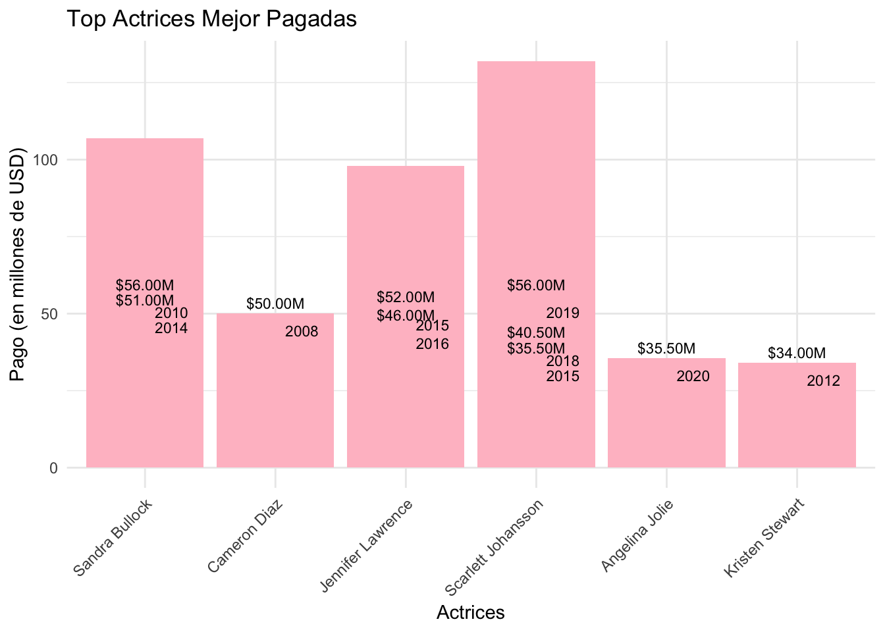
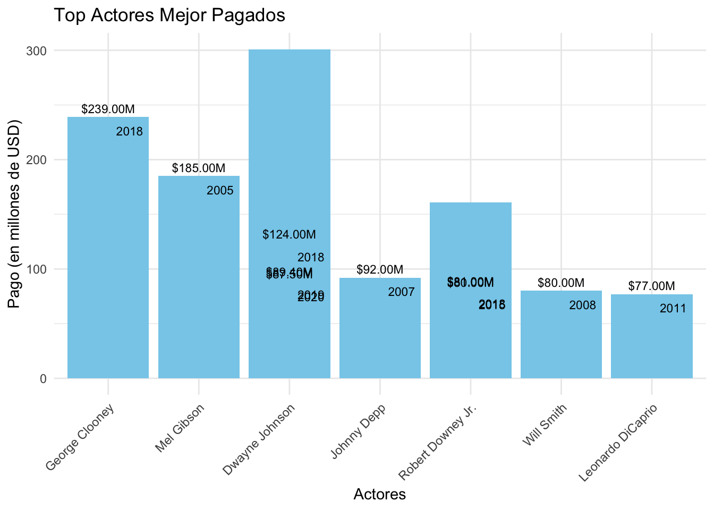
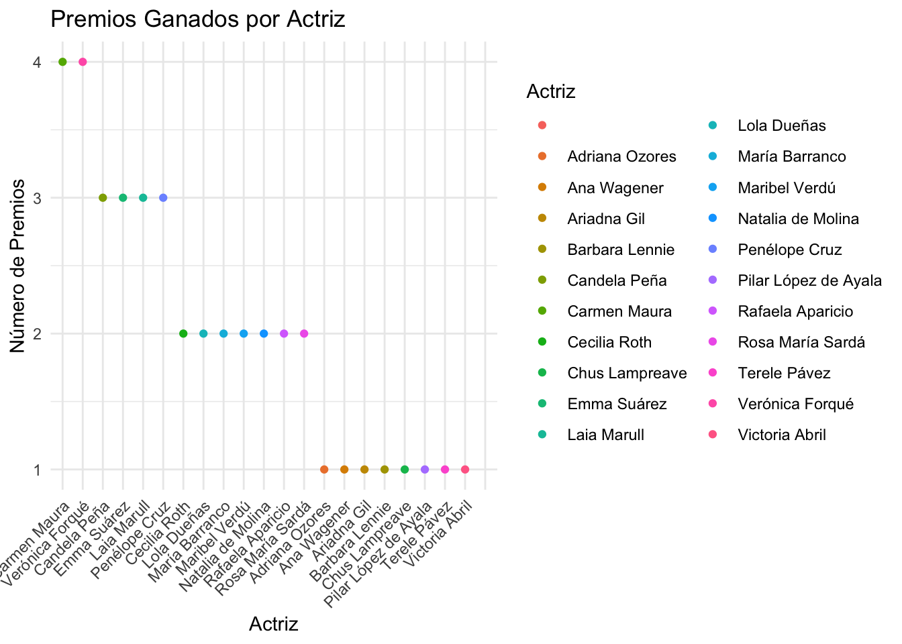
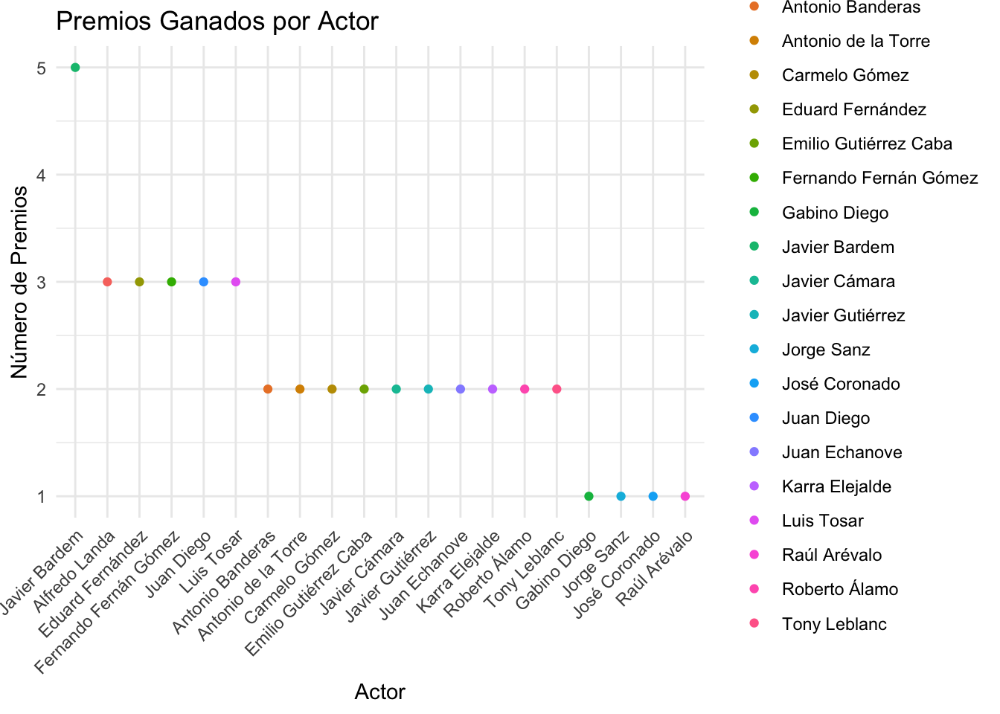
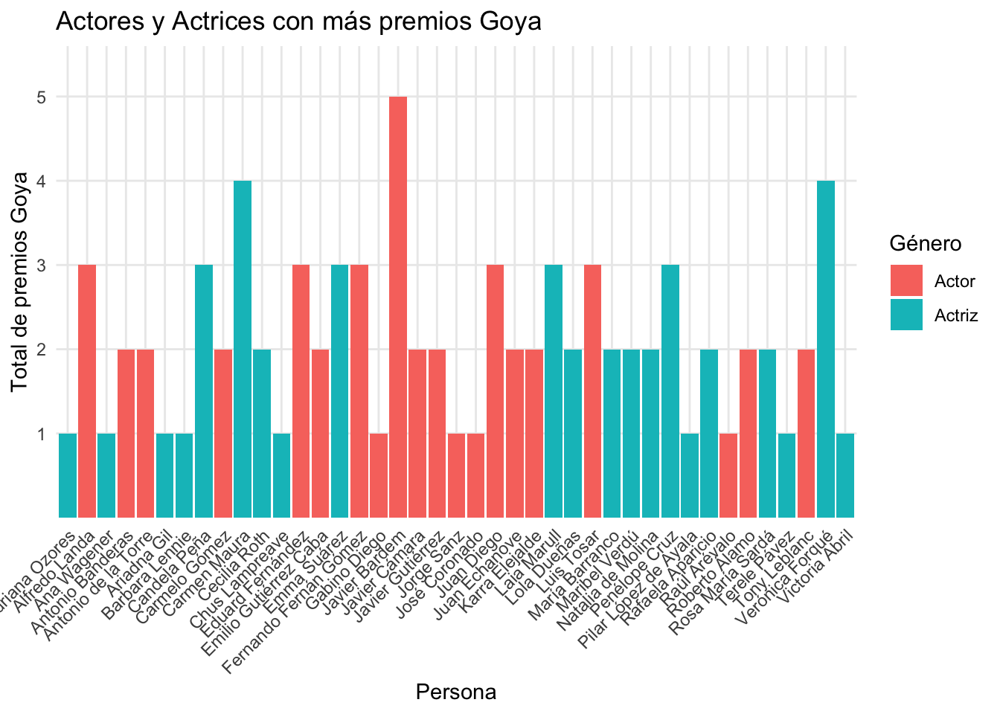
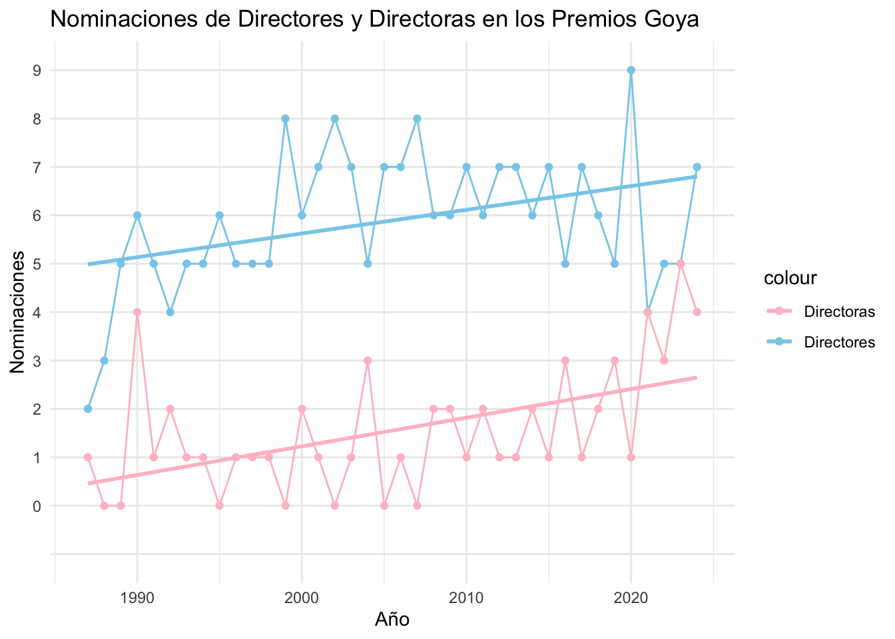

El objetivo de este proyecto es analizar y visualizar la diferencia de género en el mundo del cine, específicamente en el sector de la actuación. Y poder obtener una conclusión de si existe tal diferencia y en dónde se encuentra ésta realmente. Para ello, observaremos tanto datos financieros, como aspectos de reconocimiento. Además, para tener un estudio más objetivo, observaremos tanto a los trabajadores/as americanos/as, como a los españoles/as, intentando aproximarnos en fechas para poder hacer la comparación.
Datos
Este trabajo está inspirado en el trabajo en grupo que hice con mis compañeros: “Análisis de la Industria Cinematográfica”. Para este trabajo individual he utilizado cuatro fuentes de datos principales:
1. Forbes Celebrity 100 since 2005: Es un dataframe obtenido de Kaggle que contiene un ranking de las celebridades mejor pagadas desde 2005 a 2021, incluyendo actores, actrices, atletas y personalidades de la televisión. 2. Premios Óscar de la Academia: Nominados y ganadores 1927 hasta 2017: Es una database obtenido de Data Hub que contiene los nominados y ganadores de los Premios de la Academia (los Oscar) desde su creación en 1927 hasta 2017. 3. Premios Goya: Es una database obtenida de Epdata que contiene los actores y actrices con más premios Goya de la historia (1987 - 2022). 4. Nominaciones Goya: Es una database obtenida de Epdata que contiene el número de directores y directoras de cine nominados en los Premios Goya (1987 - 2024).
Packages y Carga de Datos
Código
# Estos son los Packages que hemos utilizadolibrary(tidyverse)library(ggplot2)library(plotly)library(gt)library(ggThemeAssist)library(sf)library(maps)library(tmap)library(stringr)# Importamos datosforbes_100 <-read.csv("data/forbes_celebrity_100.csv")oscars_100 <-read.csv("data/data.csv")goya_actrices <-read.csv("data/goya_actrices.csv")goya_actores <-read.csv("data/goya_actores.csv")directorxs <-read.csv("data/direct.csv")
Descripción de variables principales: en cada datasets he utilizado distintas variables obtenidas de los distintos links explicados en la seccion de datos:
forbes_100 : datos sobre el ranking de las celebridades mejor pagadas. oscars_100 : datos sobre los actores y actrices ganadores de Oscar. goya_actrices : datos de las actrices ganadoras de premios Goya. goya_actores : datos de los actores ganadores de premios Goya. directorxs : datos de los directores y directoras que han ganado premios Goya.
entity, name, Parámetro : nombre de la persona ya sea actor, actriz, director o directora. Gender : sexo de la persona. winner : ganadores o no de premios. category : sector del trabajo o profesión. year, Año : año en que la persona ha ganado un premio o en el caso de lxs directorxs, que ha sido nominadx. total_num_oscar, num_oscars : numero total de los premios Oscar ganados. Pay, Pay..USD.millions. : mejor pago obtenido en millones de dólares por celebridad.
1. Las más exitosas de todos los tiempos
A la hora de determinar cuál sería la mejor actriz de todos los tiempos en Hollywood, es difícil ajustarse a un criterio concreto u objetivo.
Aquí vamos a considerar las actrices mejor pagadas desde 2005 hasta 2021 enh Hollywood, utilizando el dataset de Kaggle que reúne información de Forbes y The Daily Telegraph. Para el cual haremos una limpieza de datos, extrayendo las actrices mejor pagadas (excluyendo a las actrices de televisión, para centrarnos en el género del cine).
A continuación, presentamos un gráfico de barras que muestra las actrices mejor pagadas de Hollywood de 2005 a 2021.
Código
best_actress <- forbes_100 %>%select(Name, Pay..USD.millions., Year, Category) %>%filter(Category =="Actresses") %>%rename(Pay ='Pay..USD.millions.') %>%arrange(desc(Pay)) %>%head(10)# Calculamos la media de los pagosmean_pay_female <-mean(best_actress$Pay)#Hacemos un gráfico de barras horizontalesggplot(best_actress, aes(x =reorder(Name, -Pay), y = Pay)) +geom_bar(stat ="identity", fill ="pink") +geom_text(aes(label =sprintf("$%.2fM", Pay)), position =position_dodge(width =1), vjust =-0.5, color ="black", size =3) +geom_text(aes(label = Year), position =position_dodge(width =1), vjust =2.1, hjust =-0.3, color ="black", size =3) +labs(title ="Top Actrices Mejor Pagadas",x ="Actrices",y ="Pago (en millones de USD)") +theme_minimal() +theme(axis.text.x =element_text(angle =45, hjust =1))

Del gráfico de barras podemos obtener varias conclusiones:
Podemos observar que al querer obtener el top 10 de actrices, al haber conseguido algunas actrices estar en el top de las mejor pagadas varias veces, hemos obtenido un resultado de seis actrices que ocupan el top diez.
Sandra Bullock y Scarlett Johansson han sido las actrices mejor pagadas de 2005 hasta 2021, con 56 millones de USD, en el 2010 y 2019, respectivamente. Seguidas de cerca por Jennifer Lawrence y Cameron Diaz.
La actriz que más veces ha sido la actriz mejor pagada de Hollywood de 2005 a 2021 ha sido Scarlett Johansson en 2015, 2018 y 2019, como comentaba anteriormente.
2. Las mejores actrices en base a los Oscar ganados.
A continuación, presentamos un gráfico de barras que muestra las actrices con el mayor número de Oscar ganados desde 1927 a 2017, por ser considerado uno de los galardones más importantes.
Código
oscars_actress <- oscars_100 %>%select(entity, winner, year, category) %>%filter(str_detect(category, regex("actress", ignore_case =TRUE)))# Contamos el número de Oscar ganados por cada actrizoscars_count <- oscars_actress %>%group_by(entity, year) %>%summarise(num_oscars =n())#Sumamos el número de Oscar ganados por cada actriztotal_oscar <- oscars_count %>%group_by(entity) %>%summarise(total_num_oscars =sum(num_oscars))#Ordenamos por número total de Oscar de manera descendente y tomamos las primeras 10 filastop_10_actresses <- total_oscar %>%arrange(desc(total_num_oscars)) %>%head(10)# Obtenemos los años en los que cada actriz ganó un Oscaryears_won <- oscars_count %>%filter(entity %in% top_10_actresses$entity)#Creamos el gráfico interactivo con plotlyplot_ly(top_10_actresses, x =~entity, y =~total_num_oscars, type ="bar", marker =list(color ="pink")) %>%layout(title ="Top 10 Actrices Ganadoras de Oscar",xaxis =list(title ="Actriz"),yaxis =list(title ="Número Total de Oscar Ganados"),hoverinfo ="text",text =~paste("Actriz: ", entity, "<br>Número Total de Oscar: ", total_num_oscars),showlegend =FALSE) %>%add_trace(data = years_won, x =~entity, y =~num_oscars, type ="scatter", mode ="markers",hoverinfo ="text")
Podemos observar que Meryl Streep es la actriz con mayor número de Oscar ganados desde 1927 hasta 2017, con 21 premios ganados. Seguida por Katherine Hepburn con 12 Oscar ganados y por Betta Davis con 11 Oscar: ambas actrices nacidas en 1907 y 1908 respectivamente, por lo que Meryl Streep sería la única viva de las actrices en el top 3 con mayor número de Oscar ganados a fecha del 2017.
3. Comparaciones entre actrices & actores en Hollywood.
Ahora que sabemos la información de las mejores actrices en Hollywood según sus premios Oscar ganados y lo que ganan por su trabajo, vamos a compararlo con los hombres en su sector, para saber si a partir del reconocimiento tanto monetario como en galardones (como lo es el Oscar) existe una gran diferencia entre géneros… o no.
Realizaremos exactamente los mismos pasos que anteriormente, para después poder comparar ambos:
3.1. Los más exitosos de todos los tiempos
Código
best_actors <- forbes_100 %>%select(Name, Pay..USD.millions., Year, Category) %>%filter(Category =="Actors") %>%rename(Pay ='Pay..USD.millions.') %>%arrange(desc(Pay)) %>%head(10)# Calculamos la media de los pagosmean_pay_male <-mean(best_actors$Pay)#Creamos un gráfico de barras horizontalesggplot(best_actors, aes(x =reorder(Name, -Pay), y = Pay)) +geom_bar(stat ="identity", fill ="skyblue") +geom_text(aes(label =sprintf("$%.2fM", Pay)), position =position_dodge(width =1), vjust =-0.5, color ="black", size =3) +geom_text(aes(label = Year), position =position_dodge(width =1), vjust =2.1, hjust =-0.3, color ="black", size =3) +labs(title ="Top Actores Mejor Pagados",x ="Actores",y ="Pago (en millones de USD)") +theme_minimal() +theme(axis.text.x =element_text(angle =45, hjust =1))

3.2. Los mejores actores en base a los Oscar ganados.
Código
oscars_actors <- oscars_100 %>%select(entity, winner, year, category) %>%filter(str_detect(category, regex("actor", ignore_case =TRUE)))# Contamos el número de Oscar ganados por cada actrizoscars_count_male <- oscars_actors %>%group_by(entity, year) %>%summarise(num_oscars =n())#Sumamos el número de Oscar ganados por cada actriztotal_oscars_male <- oscars_count_male %>%group_by(entity) %>%summarise(total_num_oscars =sum(num_oscars))#Ordenamos por número total de Oscar de manera descendente y tomamos las primeras 10 filastop_10_actors <- total_oscars_male %>%arrange(desc(total_num_oscars)) %>%head(10)# Obtenemos los años en los que cada actriz ganó un Oscaryears_won_male <- oscars_count_male %>%filter(entity %in% top_10_actors$entity)#Creamos el gráfico interactivo con plotlyplot_ly(top_10_actors, x =~entity, y =~total_num_oscars, type ="bar", marker =list(color ="skyblue")) %>%layout(title ="Top 10 Actores Ganadores de Oscar",xaxis =list(title ="Actor"),yaxis =list(title ="Número Total de Oscars Ganados"),hoverinfo ="text",text =~paste("Actor: ", entity, "<br>Número Total de Oscars: ", total_num_oscars),showlegend =FALSE) %>%add_trace(data = years_won_male, x =~entity, y =~num_oscars, type ="scatter", mode ="markers",hoverinfo ="text")
3.3. Comparación entre géneros de actuación en Hollywood:
3.3.1. Primero comparamos a los mejor pagados:
Código
# Creamos columnas de génerobest_actress$Gender <-"Female"best_actors$Gender <-"Male"# Obtenemos el mayor pago de cada actor o actrizbest_actress <- best_actress %>%group_by(Name) %>%summarize(Pay =max(Pay), Year =first(Year), Gender =first(Gender))best_actors <- best_actors %>%group_by(Name) %>%summarize(Pay =max(Pay), Year =first(Year), Gender =first(Gender))# Combinamos los conjuntos de datoscombined_data <-rbind(best_actress, best_actors)# Ordenamos los datos por pago total de mayor a menorcombined_data <- combined_data %>%arrange(desc(Pay))# Por último creamos un gráfico interactivo con Plotlyplot_ly(data = combined_data, x =~reorder(Name, -Pay), y =~Pay, color =~Gender, text =~paste("Pago: $", sprintf("%.2fM", Pay), "<br>Año: ", Year)) %>%add_bars() %>%layout(title ="Top Actrices y Actores Mejor Pagados",xaxis =list(title ="Personas"),yaxis =list(title ="Pago (en millones de USD)"),hovermode ="closest",barmode ="group")
Al comparar a los actores y actrices mejor pagados de Hollywood en un mismo gráfico podemos observar que los mejor pagados son los actores y después se encontrarían las mujeres mejor pagadas. No solo se puede observar que antes de las actrices aparecen primero todos los actores que habíamos observado en el gráfico del “Top Actores Mejor Pagados”, sino que el menor de los actores mejor pagados, que es Leonardo DiCaprio, todavía le saca una diferencia de 21 millones de USD a las actrices mejor pagadas que son Sandra Bullock y Scarlett Johansson, correspondiente a los años del 2005 al 2021. Además, el actor mejor pagado es George Clooney con 239 millones de USD, sacándole una diferencia a Sandra Bullock y Scarlett Johansson de 183 millones de USD.
3.3.2. Segundo comparamos a los más galardonados en premios Óscar:
Código
# Combinamos los datos de actrices y actorescombined_oscars_data <-rbind(mutate(oscars_actress, Gender ="Female"),mutate(oscars_actors, Gender ="Male"))# Contamos el número total de Oscar ganados por cada personatotal_oscars_combined <- combined_oscars_data %>%group_by(entity, Gender) %>%summarise(total_num_oscars =n_distinct(year)) %>%arrange(Gender, desc(total_num_oscars)) %>%group_by(Gender) %>%top_n(10, total_num_oscars)# Definimos los colores por génerocolors_by_gender <-c("Female"="pink", "Male"="skyblue")# Por último creamos el gráfico interactivo con Plotlyplot_ly(total_oscars_combined, x =~reorder(entity, -total_num_oscars), y =~total_num_oscars, color =~Gender,type ="bar", marker =list(color =~colors_by_gender[Gender])) %>%layout(title ="Top Actores y Actrices Ganadores de Óscar",xaxis =list(title ="Persona"),yaxis =list(title ="Número Total de Oscar Ganados"),hoverinfo ="text",text =~paste("Persona: ", entity, "<br>Número Total de Óscars: ", total_num_oscars),showlegend =FALSE)
En el caso del “Top Actores y Actrices Ganadores de Óscar” se puede apreciar una gran variedad entre actores y actrices en base a los Oscar que han ganado. En primer lugar, y ganadora máxima, se encuentra Meryl Streep, con 21 Oscar. Después, en su mayoría se encuentran los actores, con un 42% que han ganado 7 Oscar, contra un 92% de las actrices han obtenido entre 6 y 7 premios.
3.3.3 Conclusión
Hemos podido observar a través de los datos que sí existe una diferencia de género en el mundo de la actuación en Hollywood. Alevosamente, el pago que reciben los actores es muy superior al que reciben las actrices, no encontramos igualdad alguna, y esto se puede observar a primera vista en el gráfico de barras que está perfectamente separado a la mitad por colores entre actores o individuos de renta más alta versus las actrices o individuos de renta más baja. En cambio, en el gráfico “Top Actores y Actrices Ganadores de Oscar” encontramos más variedad, por una parte, en el top 4 de más galardonados/as se encuentran tres mujeres, pero después, son los actores los que más posiciones ocupan entre los más galardonados/as. Si la pregunta fuera cuántos actores han ganado más de siete Oscar entre 2005 y 2021, claramente la respuesta sería: los actores. A la hora de los premios, quizás no podemos confirmar que hay una desigualdad evidente en el rubro de la actuación en Hollywood, pero podemos verla claramente en los salarios que éstos reciben.
4. Ahora… en el caso Español.
4.1 Comparación premios Goya ganados
4.1.1. Las mejores actrices en base a los Goya ganados.
A continuación, presentamos un gráfico de puntos que muestra las actrices con el mayor número de Goya ganados desde 1987 a 2023, por ser considerado uno de los galardones más importantes en España.
Código
# Primero he tenido que separar las categorías para después poder hacer el gráfico de barras. goya_ganadoras <- goya_actrices %>% tidyr::separate(col ='Año.Periodo.Parámetro.Premios.Nominaciones',into =c("Año", "Periodo", "Parámetro", "Premios", "Nominaciones"),sep =";") %>%mutate(gender ="Actriz") %>%filter(!is.na(Premios))# Creamos el gráfico de barrasgrafico_goyam <-ggplot(goya_ganadoras, aes(x =reorder(Parámetro, -as.numeric(Premios)), y =as.numeric(Premios), color = Parámetro)) +geom_point() +labs(title ="Premios Ganados por Actriz",x ="Actriz",y ="Número de Premios",color ="Actriz") +theme_minimal() +theme(axis.text.x =element_text(angle =45, hjust =1))grafico_goyam

4.1.2. Los mejores actores en base a los Goya ganados.
A continuación, presentamos un gráfico de puntos que muestra los actores con el mayor número de Goya ganados desde 1987 a 2023.
Código
# Primero he tenido que separar las categorías para después poder hacer el gráfico de barras. goya_ganadores <- goya_actores %>% tidyr::separate(col ='Año.Periodo.Parámetro.Nominaciones.Premios',into =c("Año", "Periodo", "Parámetro", "Nominaciones", "Premios"),sep =";") %>%mutate(gender ="Actor") %>%filter(!is.na(Premios)) # Creamos el gráfico de barrasgrafico_goyah <-ggplot(goya_ganadores, aes(x =reorder(Parámetro, -as.numeric(Premios)), y =as.numeric(Premios), color = Parámetro)) +geom_point() +labs(title ="Premios Ganados por Actor",x ="Actor",y ="Número de Premios",color ="Actor") +theme_minimal() +theme(axis.text.x =element_text(angle =45, hjust =1))grafico_goyah

4.1.3. Combinamos los gráficos para poder hacer la comparación:
Código
# Combinamos los conjuntos de datosgoya_combinado <-bind_rows(mutate(goya_ganadores, gender ="Actor"),mutate(goya_ganadoras, gender ="Actriz"))# Ordenamos el conjunto de datos por el total de premios de mayor a menor y, eliminamos los NAgoya_combinado <- goya_combinado %>%arrange(desc(Premios)) %>%filter(!is.na(Nominaciones))# Creamos un gráfico de barras apiladas con ggplot2ggplot(goya_combinado, aes(x =reorder(Parámetro, Premios), y = Premios, fill = gender)) +geom_bar(stat ="identity") +labs(title ="Actores y Actrices con más premios Goya",x ="Persona",y ="Total de premios Goya",fill ="Género") +theme_minimal() +theme(axis.text.x =element_text(angle =45, hjust =1))

Una vez hemos creado un dataframe con los datos combinados de los actores, las actrices y de hacer el gráfico, podemos extraer las siguientes conclusiones:
La única persona que ha obtenido cinco Goya ha sido el actor Javier Bardem.
La mayoría de los actores han conseguido dos Goya mientras que, la mayoría de las actrices ha conseguido un Goya.
Aunque, el segundo y tercer puesto lo ocupan actrices con cuatro premios Goya ganados, podemos observar que los actores obtienen en general más premios Goya que las actrices.
4.2. Los directores y directoras con más nominaciones en los premios Goya.
Al no poder encontrar información sobre lo que ganan los actores y actrices españolas, he tenido que buscar otros datos para corroborar si lo que hemos visto en los actores y actrices de Hollywoood se repite en el mundo del cine español, por eso, he elegido a los directores y directoras más nominados/as a los premios Goya desde sus inicios hasta la fecha de hoy.
Código
# Primero he tenido que separar las categorías para después poder hacer el gráfico de barras. goya_directorxs <- directorxs %>% tidyr::separate(col ='Año.Periodo.Hombres.Mujeres',into =c("Año", "Periodo", "Hombres", "Mujeres"),sep =";") %>%filter(!is.na(Hombres))goya_directorxs <- goya_directorxs[, !(names(goya_directorxs) %in%c("Periodo"))] #eliminamos la columna Periodogoya_directorxs <-na.omit(goya_directorxs[, -(39:44)]) #eliminamos las filas de la 39 a la 44 que se encuentran vacias# Creamos un gráfico de barras con líneas de tendenciaggplot(goya_directorxs, aes(x =as.numeric(Año), group =1)) +geom_point(aes(y = Hombres, color ="Directores"), position =position_dodge(width =0.8)) +geom_line(aes(y = Hombres, color ="Directores"), position =position_dodge(width =0.8)) +geom_smooth(aes(x =as.numeric(Año), y = Hombres, color ="Directores"),method ="lm", se =FALSE, position =position_dodge(width =0.8)) +geom_point(aes(y = Mujeres, color ="Directoras"), position =position_dodge(width =0.8)) +geom_line(aes(y = Mujeres, color ="Directoras"), position =position_dodge(width =0.8)) +geom_smooth(aes(x =as.numeric(Año), y = Mujeres, color ="Directoras"),method ="lm", se =FALSE, position =position_dodge(width =0.8)) +labs(title ="Nominaciones de Directores y Directoras en los Premios Goya",x ="Año",y ="Nominaciones") +scale_color_manual(values =c("Directores"="skyblue", "Directoras"="pink")) +theme_minimal()

Una vez obtenido el gráfico, observamos claramente una distinción en la cantidad de nominaciones, siendo la de los directores mucho más elevado. Las directoras en cada año de los premios han estado por debajo de los hombres sin poder superarlos nunca. Aunque observamos una tendencia creciente en el número de las nominaciones, los directores siempre obtienen más nominaciones que las directoras.
5. ¿Existe desigualdad de género en el mundo del cine?
Al observar y evaluar los distintos gráficos tomamos conciencia de la desigualdad en el cine, que seguramente, si estudiáramos más a fondo, lo observaríamos en los distintos cargos de dicha industria. Ejemplos de esto son la campaña realizada en 2018 “Time’s Up” en donde además de reclamar otros derechos de seguridad e igualdad de la mujer, se reclamaba igualdad por la brecha salarial, debido a que las actrices por trabajar lo mismo e inclusive más en algunos casos, cobraban menos que los actores; como fue el descubrimiento por el hackeo de Sony, donde se describió la gran diferencia salarial entre algunos actores y sus compañeras actrices. Otro caso es la reciente huelga de Hollywood en 2023 que se ha hecho notar en España, en donde una vez más las mujeres de esta industria vuelven a levantar la voz por una igualdad que se vea reflejada en su trabajo, ¿cómo podemos esperar un cambio real en la pantalla si detrás de ella seguimos reproduciendo desigualdades? Es claro que, a pesar de los esfuerzos y las manifestaciones, la brecha de género persiste. La revolución en la pantalla comienza con la revolución detrás de la cámara.
Información sobre la sesión
Abajo muestro mi entorno de trabajo y paquetes utilizados
---title: "Análisis de las mujeres en la Industria Cinematográfica"description: | Exploración de datos y presentación visual de la desigualdad en esta industria.author: - name: Dana Bauer Mallach affiliation: Universitat de València affiliation-url: https://www.uv.esdate: 2023-12-23 categories: [trabajo BigData]image: "./imagenes/Imagen6.jpg"about: template: jollatitle-block-banner: pink #- {true, false, "green","#AA0000"}title-block-banner-color: "white" #-"#FFFFFF" toc: truetoc-location: lefttoc-depth: 3smooth-scroll: trueformat: html: mainfont: serif #backgroundcolor: "white" #embed-resources: true link-external-newwindow: true #css: ./assets/my_css_file.css #- CUIDADO!!!!code-tools: truecode-link: trueexecute: echo: true---## Introducción {.pink-background}El objetivo de este proyecto es analizar y visualizar la diferencia de género en el mundo del cine, específicamente en el sector de la actuación. Y poder obtener una conclusión de si existe tal diferencia y en dónde se encuentra ésta realmente. Para ello, observaremos tanto datos financieros, como aspectos de reconocimiento. Además, para tener un estudio más objetivo, observaremos tanto a los trabajadores/as americanos/as, como a los españoles/as, intentando aproximarnos en fechas para poder hacer la comparación.### DatosEste trabajo está inspirado en el trabajo en grupo que hice con mis compañeros: "Análisis de la Industria Cinematográfica". Para este trabajo individual he utilizado cuatro fuentes de datos principales: <br><br>[1. Forbes Celebrity 100 since 2005](https://www.kaggle.com/code/selcukwashere/forbes-top-100-since-2005-data-analysis): Es un dataframe obtenido de Kaggle que contiene un ranking de las celebridades mejor pagadas desde 2005 a 2021, incluyendo actores, actrices, atletas y personalidades de la televisión. <br>[2. Premios Óscar de la Academia: Nominados y ganadores 1927 hasta 2017](https://datahub.io/rufuspollock/oscars-nominees-and-winners): Es una database obtenido de Data Hub que contiene los nominados y ganadores de los Premios de la Academia (los Oscar) desde su creación en 1927 hasta 2017. <br>[3. Premios Goya](https://www.epdata.es/datos/premios-goya-datos-graficos/283): Es una database obtenida de Epdata que contiene los actores y actrices con más premios Goya de la historia (1987 - 2022). <br>[4. Nominaciones Goya](https://www.epdata.es/datos/premios-oscar-premiados-nominados-datos-graficos/302): Es una database obtenida de Epdata que contiene el número de directores y directoras de cine nominados en los Premios Goya (1987 - 2024). <br>### Packages y Carga de Datos```{r }#| code-fold: true# Estos son los Packages que hemos utilizadolibrary(tidyverse)library(ggplot2)library(plotly)library(gt)library(ggThemeAssist)library(sf)library(maps)library(tmap)library(stringr)# Importamos datosforbes_100 <-read.csv("data/forbes_celebrity_100.csv")oscars_100 <-read.csv("data/data.csv")goya_actrices <-read.csv("data/goya_actrices.csv")goya_actores <-read.csv("data/goya_actores.csv")directorxs <-read.csv("data/direct.csv")```#### Descripción de variables principales: en cada datasets he utilizado distintas variables obtenidas de los distintos links explicados en la seccion de datos:forbes_100 : datos sobre el ranking de las celebridades mejor pagadas.oscars_100 : datos sobre los actores y actrices ganadores de Oscar.goya_actrices : datos de las actrices ganadoras de premios Goya.goya_actores : datos de los actores ganadores de premios Goya.directorxs : datos de los directores y directoras que han ganado premios Goya.entity, name, Parámetro : nombre de la persona ya sea actor, actriz, director o directora.Gender : sexo de la persona.winner : ganadores o no de premios.category : sector del trabajo o profesión.year, Año : año en que la persona ha ganado un premio o en el caso de lxs directorxs, que ha sido nominadx.total_num_oscar, num_oscars : numero total de los premios Oscar ganados.Pay, Pay..USD.millions. : mejor pago obtenido en millones de dólares por celebridad.------------------------------------------------------------------------## 1. Las más exitosas de todos los tiemposA la hora de determinar cuál sería la mejor actriz de todos los tiempos en Hollywood, es difícil ajustarse a un criterio concreto u objetivo. Aquí vamos a considerar las actrices mejor pagadas desde 2005 hasta 2021 enh Hollywood, utilizando el dataset de Kaggle que reúne información de Forbes y The Daily Telegraph. Para el cual haremos una limpieza de datos, extrayendo las actrices mejor pagadas (excluyendo a las actrices de televisión, para centrarnos en el género del cine).A continuación, presentamos un gráfico de barras que muestra las actrices mejor pagadas de Hollywood de 2005 a 2021.```{r}#| code-fold: truebest_actress <- forbes_100 %>%select(Name, Pay..USD.millions., Year, Category) %>%filter(Category =="Actresses") %>%rename(Pay ='Pay..USD.millions.') %>%arrange(desc(Pay)) %>%head(10)# Calculamos la media de los pagosmean_pay_female <-mean(best_actress$Pay)#Hacemos un gráfico de barras horizontalesggplot(best_actress, aes(x =reorder(Name, -Pay), y = Pay)) +geom_bar(stat ="identity", fill ="pink") +geom_text(aes(label =sprintf("$%.2fM", Pay)), position =position_dodge(width =1), vjust =-0.5, color ="black", size =3) +geom_text(aes(label = Year), position =position_dodge(width =1), vjust =2.1, hjust =-0.3, color ="black", size =3) +labs(title ="Top Actrices Mejor Pagadas",x ="Actrices",y ="Pago (en millones de USD)") +theme_minimal() +theme(axis.text.x =element_text(angle =45, hjust =1))```#### Del gráfico de barras podemos obtener varias conclusiones: 1) Podemos observar que al querer obtener el top 10 de actrices, al haber conseguido algunas actrices estar en el top de las mejor pagadas varias veces, hemos obtenido un resultado de seis actrices que ocupan el top diez.2) Sandra Bullock y Scarlett Johansson han sido las actrices mejor pagadas de 2005 hasta 2021, con 56 millones de USD, en el 2010 y 2019, respectivamente. Seguidas de cerca por Jennifer Lawrence y Cameron Diaz. 3) La actriz que más veces ha sido la actriz mejor pagada de Hollywood de 2005 a 2021 ha sido Scarlett Johansson en 2015, 2018 y 2019, como comentaba anteriormente. ## 2. Las mejores actrices en base a los Oscar ganados.A continuación, presentamos un gráfico de barras que muestra las actrices con el mayor número de Oscar ganados desde 1927 a 2017, por ser considerado uno de los galardones más importantes.```{r}#| code-fold: trueoscars_actress <- oscars_100 %>%select(entity, winner, year, category) %>%filter(str_detect(category, regex("actress", ignore_case =TRUE)))# Contamos el número de Oscar ganados por cada actrizoscars_count <- oscars_actress %>%group_by(entity, year) %>%summarise(num_oscars =n())#Sumamos el número de Oscar ganados por cada actriztotal_oscar <- oscars_count %>%group_by(entity) %>%summarise(total_num_oscars =sum(num_oscars))#Ordenamos por número total de Oscar de manera descendente y tomamos las primeras 10 filastop_10_actresses <- total_oscar %>%arrange(desc(total_num_oscars)) %>%head(10)# Obtenemos los años en los que cada actriz ganó un Oscaryears_won <- oscars_count %>%filter(entity %in% top_10_actresses$entity)#Creamos el gráfico interactivo con plotlyplot_ly(top_10_actresses, x =~entity, y =~total_num_oscars, type ="bar", marker =list(color ="pink")) %>%layout(title ="Top 10 Actrices Ganadoras de Oscar",xaxis =list(title ="Actriz"),yaxis =list(title ="Número Total de Oscar Ganados"),hoverinfo ="text",text =~paste("Actriz: ", entity, "<br>Número Total de Oscar: ", total_num_oscars),showlegend =FALSE) %>%add_trace(data = years_won, x =~entity, y =~num_oscars, type ="scatter", mode ="markers",hoverinfo ="text")```Podemos observar que Meryl Streep es la actriz con mayor número de Oscar ganados desde 1927 hasta 2017, con 21 premios ganados. Seguida por Katherine Hepburn con 12 Oscar ganados y por Betta Davis con 11 Oscar: ambas actrices nacidas en 1907 y 1908 respectivamente, por lo que Meryl Streep sería la única viva de las actrices en el top 3 con mayor número de Oscar ganados a fecha del 2017.## 3. Comparaciones entre actrices & actores en Hollywood.Ahora que sabemos la información de las mejores actrices en Hollywood según sus premios Oscar ganados y lo que ganan por su trabajo, vamos a compararlo con los hombres en su sector, para saber si a partir del reconocimiento tanto monetario como en galardones (como lo es el Oscar) existe una gran diferencia entre géneros... o no.Realizaremos exactamente los mismos pasos que anteriormente, para después poder comparar ambos:### 3.1. Los más exitosos de todos los tiempos ```{r}#| code-fold: truebest_actors <- forbes_100 %>%select(Name, Pay..USD.millions., Year, Category) %>%filter(Category =="Actors") %>%rename(Pay ='Pay..USD.millions.') %>%arrange(desc(Pay)) %>%head(10)# Calculamos la media de los pagosmean_pay_male <-mean(best_actors$Pay)#Creamos un gráfico de barras horizontalesggplot(best_actors, aes(x =reorder(Name, -Pay), y = Pay)) +geom_bar(stat ="identity", fill ="skyblue") +geom_text(aes(label =sprintf("$%.2fM", Pay)), position =position_dodge(width =1), vjust =-0.5, color ="black", size =3) +geom_text(aes(label = Year), position =position_dodge(width =1), vjust =2.1, hjust =-0.3, color ="black", size =3) +labs(title ="Top Actores Mejor Pagados",x ="Actores",y ="Pago (en millones de USD)") +theme_minimal() +theme(axis.text.x =element_text(angle =45, hjust =1))```### 3.2. Los mejores actores en base a los Oscar ganados.```{r}#| code-fold: trueoscars_actors <- oscars_100 %>%select(entity, winner, year, category) %>%filter(str_detect(category, regex("actor", ignore_case =TRUE)))# Contamos el número de Oscar ganados por cada actrizoscars_count_male <- oscars_actors %>%group_by(entity, year) %>%summarise(num_oscars =n())#Sumamos el número de Oscar ganados por cada actriztotal_oscars_male <- oscars_count_male %>%group_by(entity) %>%summarise(total_num_oscars =sum(num_oscars))#Ordenamos por número total de Oscar de manera descendente y tomamos las primeras 10 filastop_10_actors <- total_oscars_male %>%arrange(desc(total_num_oscars)) %>%head(10)# Obtenemos los años en los que cada actriz ganó un Oscaryears_won_male <- oscars_count_male %>%filter(entity %in% top_10_actors$entity)#Creamos el gráfico interactivo con plotlyplot_ly(top_10_actors, x =~entity, y =~total_num_oscars, type ="bar", marker =list(color ="skyblue")) %>%layout(title ="Top 10 Actores Ganadores de Oscar",xaxis =list(title ="Actor"),yaxis =list(title ="Número Total de Oscars Ganados"),hoverinfo ="text",text =~paste("Actor: ", entity, "<br>Número Total de Oscars: ", total_num_oscars),showlegend =FALSE) %>%add_trace(data = years_won_male, x =~entity, y =~num_oscars, type ="scatter", mode ="markers",hoverinfo ="text")```### 3.3. Comparación entre géneros de actuación en Hollywood:#### 3.3.1. Primero comparamos a los mejor pagados:```{r}#| code-fold: true# Creamos columnas de génerobest_actress$Gender <-"Female"best_actors$Gender <-"Male"# Obtenemos el mayor pago de cada actor o actrizbest_actress <- best_actress %>%group_by(Name) %>%summarize(Pay =max(Pay), Year =first(Year), Gender =first(Gender))best_actors <- best_actors %>%group_by(Name) %>%summarize(Pay =max(Pay), Year =first(Year), Gender =first(Gender))# Combinamos los conjuntos de datoscombined_data <-rbind(best_actress, best_actors)# Ordenamos los datos por pago total de mayor a menorcombined_data <- combined_data %>%arrange(desc(Pay))# Por último creamos un gráfico interactivo con Plotlyplot_ly(data = combined_data, x =~reorder(Name, -Pay), y =~Pay, color =~Gender, text =~paste("Pago: $", sprintf("%.2fM", Pay), "<br>Año: ", Year)) %>%add_bars() %>%layout(title ="Top Actrices y Actores Mejor Pagados",xaxis =list(title ="Personas"),yaxis =list(title ="Pago (en millones de USD)"),hovermode ="closest",barmode ="group")```Al comparar a los actores y actrices mejor pagados de Hollywood en un mismo gráfico podemos observar que los mejor pagados son los actores y después se encontrarían las mujeres mejor pagadas. No solo se puede observar que antes de las actrices aparecen primero todos los actores que habíamos observado en el gráfico del "Top Actores Mejor Pagados", sino que el menor de los actores mejor pagados, que es Leonardo DiCaprio, todavía le saca una diferencia de 21 millones de USD a las actrices mejor pagadas que son Sandra Bullock y Scarlett Johansson, correspondiente a los años del 2005 al 2021. Además, el actor mejor pagado es George Clooney con 239 millones de USD, sacándole una diferencia a Sandra Bullock y Scarlett Johansson de 183 millones de USD.#### 3.3.2. Segundo comparamos a los más galardonados en premios Óscar:```{r}#| code-fold: true# Combinamos los datos de actrices y actorescombined_oscars_data <-rbind(mutate(oscars_actress, Gender ="Female"),mutate(oscars_actors, Gender ="Male"))# Contamos el número total de Oscar ganados por cada personatotal_oscars_combined <- combined_oscars_data %>%group_by(entity, Gender) %>%summarise(total_num_oscars =n_distinct(year)) %>%arrange(Gender, desc(total_num_oscars)) %>%group_by(Gender) %>%top_n(10, total_num_oscars)# Definimos los colores por génerocolors_by_gender <-c("Female"="pink", "Male"="skyblue")# Por último creamos el gráfico interactivo con Plotlyplot_ly(total_oscars_combined, x =~reorder(entity, -total_num_oscars), y =~total_num_oscars, color =~Gender,type ="bar", marker =list(color =~colors_by_gender[Gender])) %>%layout(title ="Top Actores y Actrices Ganadores de Óscar",xaxis =list(title ="Persona"),yaxis =list(title ="Número Total de Oscar Ganados"),hoverinfo ="text",text =~paste("Persona: ", entity, "<br>Número Total de Óscars: ", total_num_oscars),showlegend =FALSE)```En el caso del "Top Actores y Actrices Ganadores de Óscar" se puede apreciar una gran variedad entre actores y actrices en base a los Oscar que han ganado. En primer lugar, y ganadora máxima, se encuentra Meryl Streep, con 21 Oscar. Después, en su mayoría se encuentran los actores, con un 42% que han ganado 7 Oscar, contra un 92% de las actrices han obtenido entre 6 y 7 premios.#### 3.3.3 Conclusión {.pink-background}Hemos podido observar a través de los datos que sí existe una diferencia de género en el mundo de la actuación en Hollywood. Alevosamente, el pago que reciben los actores es muy superior al que reciben las actrices, no encontramos igualdad alguna, y esto se puede observar a primera vista en el gráfico de barras que está perfectamente separado a la mitad por colores entre actores o individuos de renta más alta versus las actrices o individuos de renta más baja. En cambio, en el gráfico "Top Actores y Actrices Ganadores de Oscar" encontramos más variedad, por una parte, en el top 4 de más galardonados/as se encuentran tres mujeres, pero después, son los actores los que más posiciones ocupan entre los más galardonados/as. Si la pregunta fuera cuántos actores han ganado más de siete Oscar entre 2005 y 2021, claramente la respuesta sería: los actores. A la hora de los premios, quizás no podemos confirmar que hay una desigualdad evidente en el rubro de la actuación en Hollywood, pero podemos verla claramente en los salarios que éstos reciben.## 4. Ahora... en el caso Español.### 4.1 Comparación premios Goya ganados#### 4.1.1. Las mejores actrices en base a los Goya ganados.A continuación, presentamos un gráfico de puntos que muestra las actrices con el mayor número de Goya ganados desde 1987 a 2023, por ser considerado uno de los galardones más importantes en España.```{r}#| code-fold: true# Primero he tenido que separar las categorías para después poder hacer el gráfico de barras. goya_ganadoras <- goya_actrices %>% tidyr::separate(col ='Año.Periodo.Parámetro.Premios.Nominaciones',into =c("Año", "Periodo", "Parámetro", "Premios", "Nominaciones"),sep =";") %>%mutate(gender ="Actriz") %>%filter(!is.na(Premios))# Creamos el gráfico de barrasgrafico_goyam <-ggplot(goya_ganadoras, aes(x =reorder(Parámetro, -as.numeric(Premios)), y =as.numeric(Premios), color = Parámetro)) +geom_point() +labs(title ="Premios Ganados por Actriz",x ="Actriz",y ="Número de Premios",color ="Actriz") +theme_minimal() +theme(axis.text.x =element_text(angle =45, hjust =1))grafico_goyam```#### 4.1.2. Los mejores actores en base a los Goya ganados.A continuación, presentamos un gráfico de puntos que muestra los actores con el mayor número de Goya ganados desde 1987 a 2023.```{r}#| code-fold: true# Primero he tenido que separar las categorías para después poder hacer el gráfico de barras. goya_ganadores <- goya_actores %>% tidyr::separate(col ='Año.Periodo.Parámetro.Nominaciones.Premios',into =c("Año", "Periodo", "Parámetro", "Nominaciones", "Premios"),sep =";") %>%mutate(gender ="Actor") %>%filter(!is.na(Premios)) # Creamos el gráfico de barrasgrafico_goyah <-ggplot(goya_ganadores, aes(x =reorder(Parámetro, -as.numeric(Premios)), y =as.numeric(Premios), color = Parámetro)) +geom_point() +labs(title ="Premios Ganados por Actor",x ="Actor",y ="Número de Premios",color ="Actor") +theme_minimal() +theme(axis.text.x =element_text(angle =45, hjust =1))grafico_goyah```#### 4.1.3. Combinamos los gráficos para poder hacer la comparación:```{r}#| code-fold: true# Combinamos los conjuntos de datosgoya_combinado <-bind_rows(mutate(goya_ganadores, gender ="Actor"),mutate(goya_ganadoras, gender ="Actriz"))# Ordenamos el conjunto de datos por el total de premios de mayor a menor y, eliminamos los NAgoya_combinado <- goya_combinado %>%arrange(desc(Premios)) %>%filter(!is.na(Nominaciones))# Creamos un gráfico de barras apiladas con ggplot2ggplot(goya_combinado, aes(x =reorder(Parámetro, Premios), y = Premios, fill = gender)) +geom_bar(stat ="identity") +labs(title ="Actores y Actrices con más premios Goya",x ="Persona",y ="Total de premios Goya",fill ="Género") +theme_minimal() +theme(axis.text.x =element_text(angle =45, hjust =1))```#### Una vez hemos creado un dataframe con los datos combinados de los actores, las actrices y de hacer el gráfico, podemos extraer las siguientes conclusiones: {.pink-background}1) La única persona que ha obtenido cinco Goya ha sido el actor Javier Bardem.2) La mayoría de los actores han conseguido dos Goya mientras que, la mayoría de las actrices ha conseguido un Goya. 3) Aunque, el segundo y tercer puesto lo ocupan actrices con cuatro premios Goya ganados, podemos observar que los actores obtienen en general más premios Goya que las actrices. ### 4.2. Los directores y directoras con más nominaciones en los premios Goya.Al no poder encontrar información sobre lo que ganan los actores y actrices españolas, he tenido que buscar otros datos para corroborar si lo que hemos visto en los actores y actrices de Hollywoood se repite en el mundo del cine español, por eso, he elegido a los directores y directoras más nominados/as a los premios Goya desde sus inicios hasta la fecha de hoy.```{r}#| code-fold: true# Primero he tenido que separar las categorías para después poder hacer el gráfico de barras. goya_directorxs <- directorxs %>% tidyr::separate(col ='Año.Periodo.Hombres.Mujeres',into =c("Año", "Periodo", "Hombres", "Mujeres"),sep =";") %>%filter(!is.na(Hombres))goya_directorxs <- goya_directorxs[, !(names(goya_directorxs) %in%c("Periodo"))] #eliminamos la columna Periodogoya_directorxs <-na.omit(goya_directorxs[, -(39:44)]) #eliminamos las filas de la 39 a la 44 que se encuentran vacias# Creamos un gráfico de barras con líneas de tendenciaggplot(goya_directorxs, aes(x =as.numeric(Año), group =1)) +geom_point(aes(y = Hombres, color ="Directores"), position =position_dodge(width =0.8)) +geom_line(aes(y = Hombres, color ="Directores"), position =position_dodge(width =0.8)) +geom_smooth(aes(x =as.numeric(Año), y = Hombres, color ="Directores"),method ="lm", se =FALSE, position =position_dodge(width =0.8)) +geom_point(aes(y = Mujeres, color ="Directoras"), position =position_dodge(width =0.8)) +geom_line(aes(y = Mujeres, color ="Directoras"), position =position_dodge(width =0.8)) +geom_smooth(aes(x =as.numeric(Año), y = Mujeres, color ="Directoras"),method ="lm", se =FALSE, position =position_dodge(width =0.8)) +labs(title ="Nominaciones de Directores y Directoras en los Premios Goya",x ="Año",y ="Nominaciones") +scale_color_manual(values =c("Directores"="skyblue", "Directoras"="pink")) +theme_minimal()```Una vez obtenido el gráfico, observamos claramente una distinción en la cantidad de nominaciones, siendo la de los directores mucho más elevado. Las directoras en cada año de los premios han estado por debajo de los hombres sin poder superarlos nunca. Aunque observamos una tendencia creciente en el número de las nominaciones, los directores siempre obtienen más nominaciones que las directoras.## 5. ¿Existe desigualdad de género en el mundo del cine? {.pink-background}Al observar y evaluar los distintos gráficos tomamos conciencia de la desigualdad en el cine, que seguramente, si estudiáramos más a fondo, lo observaríamos en los distintos cargos de dicha industria. Ejemplos de esto son la campaña realizada en 2018 "Time's Up" en donde además de reclamar otros derechos de seguridad e igualdad de la mujer, se reclamaba igualdad por la brecha salarial, debido a que las actrices por trabajar lo mismo e inclusive más en algunos casos, cobraban menos que los actores; como fue el descubrimiento por el hackeo de Sony, donde se describió la gran diferencia salarial entre algunos actores y sus compañeras actrices. Otro caso es la reciente huelga de Hollywood en 2023 que se ha hecho notar en España, en donde una vez más las mujeres de esta industria vuelven a levantar la voz por una igualdad que se vea reflejada en su trabajo, ¿cómo podemos esperar un cambio real en la pantalla si detrás de ella seguimos reproduciendo desigualdades?Es claro que, a pesar de los esfuerzos y las manifestaciones, la brecha de género persiste. La revolución en la pantalla comienza con la revolución detrás de la cámara.### Información sobre la sesiónAbajo muestro mi entorno de trabajo y paquetes utilizados::: {.callout-código collapse="true" appearance="default" icon="false"}```{r}#| echo: falsesessioninfo::session_info() %>% details::details(summary ='current session info') ```:::